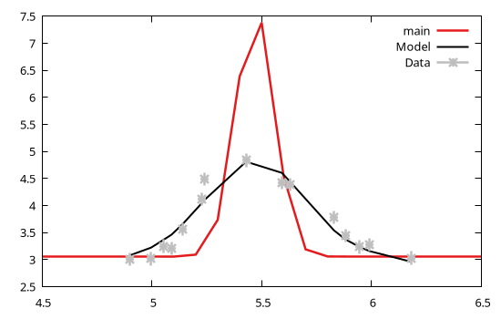

Instrument response
An instrument response allows to convert the unfolded model into a form suitable to be compared with empirical data. This may also involve a remapping from the unfolded model domain (namely, the domain where all model components are evaluated) to the folded model domain (namely, the domain where the measurements are evaluated).
GModelFit.jl provides only one built-in instrument response named GModelFit.IdealInstrument representing an ideal instrument where the folded and unfolded models are identical. No attempt is made to provide further instrument responses since these are strongly dependent on the instrument being used for the measurements.
It is however possible to implement a custom instrument responses as follows:
- Define a new structure inheriting from
GModelFit.AbstractInstrumentResponse; - Optionally implement a
prepare!(::AbstractInstrumentResponse, ::AbstractDomain)method aimed to pre-compute quantities to be used during model evaluation. This step is not mandatory, and the default implementation forprepare!does nothing; - Implement an
unfolded_domainmethod whose purpose is to return the domain for the unfolded model; - Implement an
apply_ir!method whose purpose is to apply the instrument response on an unfolded model evaluation, and to populate the vector of the folded model; - Use
set_IR!to select the proper instrument response.
As an example we copy here the implementation for the IdealInstrument:
# Define IdealInstrument structure
struct IdealInstrument <: AbstractInstrumentResponse
end
# Method to retrieve the unfolded model domain. In this case it simply is the same as the folded domain.
unfolded_domain(IR::IdealInstrument, folded_domain::AbstractDomain) = folded_domain
# Method to apply the instrument response. In this case it simply copies all values from the "unfolded"
# vector to the "folded" one.
function apply_ir!(IR::IdealInstrument,
folded_domain::AbstractDomain , folded::Vector,
unfolded_domain::AbstractDomain, unfolded::Vector)
folded .= unfolded
endExample
A more complex example is as follows: suppose your instrument has a limited resolution and responds to a narrow signal by producing a rather broad feature in the data. Also assume that your data are sampled on a non-regular grid, while you need to evaluate the unfolded model on a regular grid.
The following code shows how to implement an instrument response which:
- uses an evenly spaced grid for unfolded model evaluation;
- convolve the unfolded model with a kernel representing the finite resolution of the instrument;
- interpolate the evaluation onto the irregular grid where data are available.
using GModelFit, Gnuplot, DSP, Interpolations
# Import relevant methods
import GModelFit: unfolded_domain, apply_ir!
# Create the new structure representing the instrument response
struct MyInstrument <: GModelFit.AbstractInstrumentResponse
kernel::Vector{Float64}
function MyInstrument()
# Convolution kernel representing the limited resolution of the instrument
# (an ideal instrument would have kernel = [1])
kernel = [0.0, 0.0, 0.0, 0.0, 0.002, 0.009, 0.027, 0.065, 0.121, 0.176, 0.199,
0.176, 0.121, 0.065, 0.027, 0.009, 0.002, 0.0, 0.0, 0.0, 0.0]
return new(kernel)
end
end
# Return the evenly-spaced domain to be used for evalation of the unfolded model
unfolded_domain(IR::MyInstrument, folded_domain::GModelFit.AbstractDomain) = Domain(4.5:0.1:6.5)
# Apply instrument response
function apply_ir!(IR::MyInstrument,
folded_domain::GModelFit.AbstractDomain, folded::Vector,
unfolded_domain::GModelFit.AbstractDomain, unfolded::Vector)
# Convolve with instrument response
d = div(length(IR.kernel)-1, 2)
y = conv(unfolded, IR.kernel)[d+1:end-d]
# Interpolate on the irregular grid of the folded domain
folded .= linear_interpolation(coords(unfolded_domain), y)(coords(folded_domain))
endThe code to use the above defined MyInstrument instrument response is as follows:
# Create empirical data structures
dom = Domain([4.898, 4.997, 5.054, 5.09, 5.142, 5.229, 5.239, 5.429, 5.592, 5.629, 5.829, 5.882, 5.946, 5.99, 6.181])
data = Measures(dom, [3.009, 3.017, 3.251, 3.209, 3.568, 4.118, 4.487, 4.837, 4.428, 4.396, 3.78, 3.443, 3.237, 3.28, 3.032], 0.12)
# Define a model and set MyInstrument as instrument response
model = Model(@fd (x, μ=5.5, σ=0.1, off=3) -> (@. off + exp(-0.5 * ((x - μ) / σ)^2) / sqrt(2pi) / σ))
set_IR!(model, MyInstrument())
# Fit data to the model
bestfit, fsumm = fit(model, data)(Components:
╭───────────┬───────┬───────┬─────────────┬───────────┬───────────┬───────────┬─────────╮
│ Component │ Type │ #Free │ Eval. count │ Min │ Max │ Mean │ NaN/Inf │
├───────────┼───────┼───────┼─────────────┼───────────┼───────────┼───────────┼─────────┤
│ main │ FComp │ 3 │ 93 │ 3.057 │ 7.384 │ 3.533 │ 0 │
╰───────────┴───────┴───────┴─────────────┴───────────┴───────────┴───────────┴─────────╯
Parameters:
╭───────────┬───────┬────────┬──────────┬───────────┬───────────┬────────┬───────╮
│ Component │ Type │ Param. │ Range │ Value │ Uncert. │ Actual │ Patch │
├───────────┼───────┼────────┼──────────┼───────────┼───────────┼────────┼───────┤
│ main │ FComp │ μ │ -Inf:Inf │ 5.47 │ 0.01569 │ │ │
│ │ │ σ │ -Inf:Inf │ 0.08669 │ 0.03739 │ │ │
│ │ │ off │ -Inf:Inf │ 3.057 │ 0.04929 │ │ │
╰───────────┴───────┴────────┴──────────┴───────────┴───────────┴────────┴───────╯
, Fit summary: #data: 15, #free pars: 3, red. fit stat.: 2.3376, status: OK
)From the plot we can see that the feature in the data is broader than the actual feature in the unfolded model (identified by the main component):
@gp bestfit data